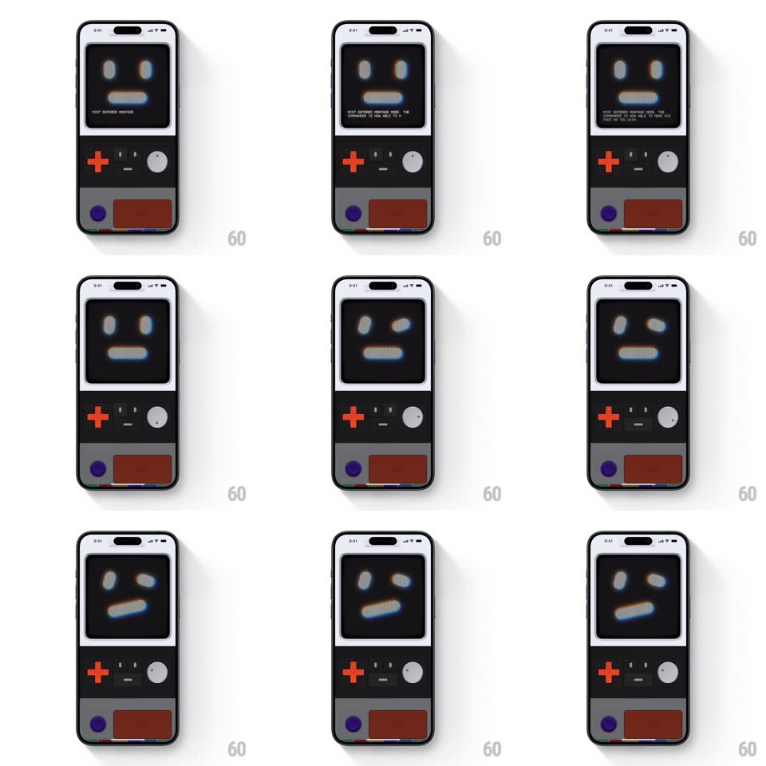

Media
Frame-by-frame

Rebuild this interaction 1:1: Mist's knob and D-pad - on the white retro console body, tapping the red D-pad directions and rotating the dial skews, shifts, and stretches the CRT mascot's face in real time - eyes drifting, mouth tilting, the whole face deforming like analog signal drift.

Rebuild this interaction 1:1: Mist's knob and D-pad - on the white retro console body, tapping the red D-pad directions and rotating the dial skews, shifts, and stretches the CRT mascot's face in real time - eyes drifting, mouth tilting, the whole face deforming like analog signal drift.
## Integration
Integration: stack-agnostic spec - springs given as stiffness/damping, timed motions as duration + curve; map every value to your framework and animation library of choice.
## Scene
White/light console variant: CRT screen showing the pixel face (neutral expression, light pixels on dark), below it a red plus-shaped D-pad left, a round grey dial right, speaker grille bottom. Status microcopy appears under the face.
## Motion spec
Pattern: direct-manipulation face deformation.
- D-pad tap: the face nudges in that direction (translate 8px, spring ~400/18, snappy return overshoot) - left/right shift the eyes and mouth together; up/down stretch or squash the face vertically (scaleY +/-10%).
- Dial rotate: the face skews continuously with the dial angle (skewX mapped -12deg..+12deg, direct 1:1) and a soft chromatic fringe grows with the skew (RGB split up to 3px at extremes).
- Release the dial: it springs back to center (spring ~300/18, visible wobble) and the face relaxes to neutral on the same spring.
- The microcopy under the face updates with the deformation ("MIST SKEWED HARD PORTSIDE MODE" etc.), typed in 20ms/char.
## Calibration
- Every deformation has an under-damped return - the face feels like jelly on springs.
- The chromatic fringe only appears under deformation - neutral face is clean white pixels.
## Reduced motion
Face snaps to deformed poses without springs; no fringe.
## Don't miss
- The face deforms as one connected raster - eyes, mouth, and outline distort together, not as separate sprites.
- The dial has a real indicator line - its rotation state is readable without looking at the screen.